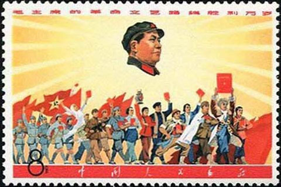

Bevezetés
Kína a világ legősibb folyamatos civilizációja, amely már az
ókorban önálló kulturális egységet alkotott, és igen fejlettnek számított. Számos, Európában csak jóval később megismert találmánymár az ókorban vagy a kora-középkorban ismert volt Kínában. Az egységes birodalom (i. e. 221-es) megalakulása óta lényegében egységben, a különböző dinasztiák vezetésével és a többi kultúrától elzárva fejlődött egészen a 19. századig, amikor is az angolok félgyarmati sorba taszították. Egészen a 20. század közepéig a különböző nagy- és középhatalmaknak kiszolgáltatva, közben egy rendszerváltást átélve, 1949-ben a szárazföldön ismét
beköszöntött az egység, megalakult a jelenleg is fennálló Kínai Népköztársaság, és az ellenzék kiszorult Tajvan szigetére.
Történelem
Kína történelme a világ történelmében egyedülálló azzal, hogy ez a civilizáció ugyanazon a kontinensnyi méretű területen, több évezreden át folyamatosan fennmaradt, népessége ismereteink szerint mindvégig a legnagyobb volt a világ etnikumai között, és fejlődését az időnkénti súlyos megtorpanások ellenére mindig meg tudta újítani,
ezáltal évszázadokon keresztül a világ vezető hatalma tudott maradni, a zűrzavaros időszakokat követően pedig újra és újra azzá válni.
Ókor
A kínai ókor a kínai történelemnek az i. e. 18. század – i. sz. 220 közötti időszakát öleli fel, ami nagyjából egybeesik a közel-keleti és európai ókorral. A kínai ókort Kína őstörténete előzi meg,
és a kínai középkor vagy középső császárkor követi. A kínai ókor a következő korszakokra osztható: Kínai bronzkor
Az első bizonyítottan létezett dinasztia a Shang-dinasztia (Sang) volt (más néven Yin-dinasztia) volt, amely az i. e. 18–17. században jutott hatalomra a kegyetlenségéről és züllöttségéről híres utolsó Xia-házi uralkodó, Jie hatalmának megdöntésével. A Shang királyok befolyása a Sárga-folyó középső és alsó szakaszának, illetve ezek mellékfolyóinak völgyére terjedt ki, tehát a mai Észak-Kína jelentős része az uralmuk, vagy legalábbis hatásuk alatt állt. A Shangok birodalma – bár erről igen keveset tudunk – minden bizonnyal nem egységes állam volt, hanem a Sárga-folyó vízgyűjtő területén élő olyan törzsek szövetsége, amelyek elismerték a
Sang törzs uralkodójának vallási és politikai elsőbbségét, adót fizettek neki és részt vettek a hadjárataiban
középkor
A kínai középkor a kínai történelemnek a 220–1368 közötti időszakát öleli fel, ami nem esik egybe az európai szemléleten alapuló középkorral,
de közelíti azt. A kínai középkort a kínai ókor előzi meg, és a Ming-kor követi (1368–1644).
Az utolsó Han császár bukása után Kína három királyságra szakadt: az északi Vejre (魏; Wèi), a délkeleti Vura (吳; Wú) és a mai Szecsuan tartomány területét uraló Sura (蜀; Shǔ).
A három királyság évtizedeken át véres háborút vívott egymással
Időközben az északi, északnyugati erdőségekben és sztyeppéken megerősödtek a különböző lovas nomád törzsek, amelyek már eddig is sok gondot okoztak a kínaiaknak. Mandzsúria, Közép-Ázsia, az északnyugati hegyek és fennsíkok a történelem folyamán kiapadhatatlan forrásai voltak a különféle nomád törzseknek, amelyeknek lételeme volt a hódítás. Lovas harcmodorukkal szemben a főleg gyalogosokból álló kínai hadsereg gyakran tehetetlen volt,
különösen azokban a korszakokban, amikor a központi hatalom meggyöngült
Kommunizmus
Kínát fokozatosan alkotmányos monarchiává alakítják. Ilyen körülmények között tört ki 1911. október 10-én a vucsangi felkelés (klasszikus kínai: 武昌起義; Wǔchāng qǐyì)
ami végül az 1911-es kínai forradalomba torkollott és végül véget vetett a kínai császárságnak
A dinasztia elkövette azt a hibát, hogy a felkelők ellen indított csapatok élére régi tábornokát, Jüan Si-kajt nevezte ki.
Jüan ugyan harcot indított a felkelők ellen, de jelezte nekik azon szándékát, miszerint szívesen megegyezne velük
Ezzel a kínai császárság története lezárult, hogy kezdetét vegye a köztársaság kora, amelyben Kína még a császárság végnapjainál is zavarosabb képet mutatott.
A kínai polgárháborúban aratott győzelme után a Kínai Kommunista Párt 1949. október 1-jén kikiáltotta a Kínai Népköztársaság megalakítását. Ezután néhány év alatt felszámolták a sok éves polgárháború által okozott gazdasági károkat. A belső politikai helyzetet kemény kézzel,
nem egyszer kegyetlen katonai, politikai és gazdasági eszközök alkalmazásával stabilizálták.
|  |
 |